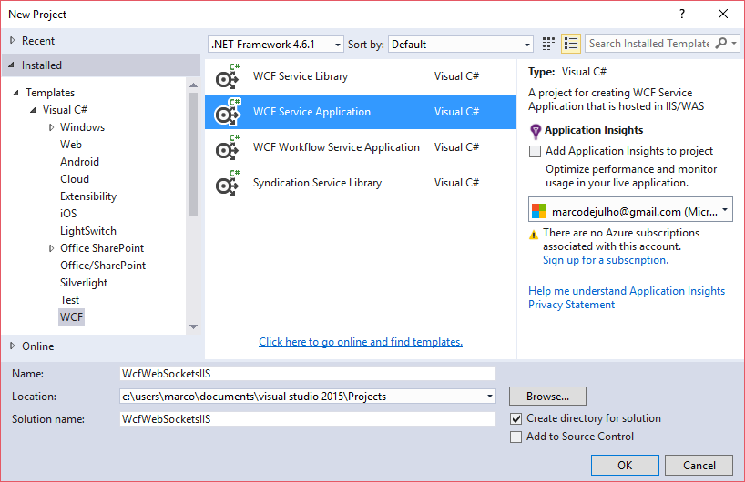
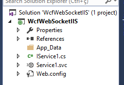
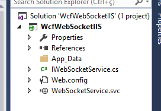
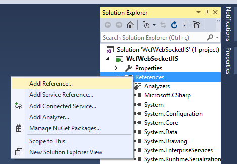
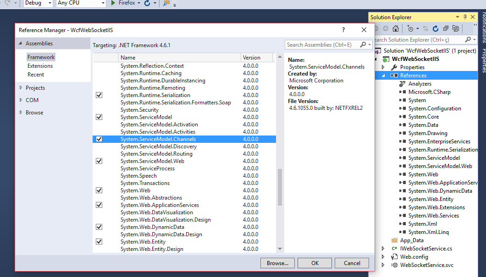
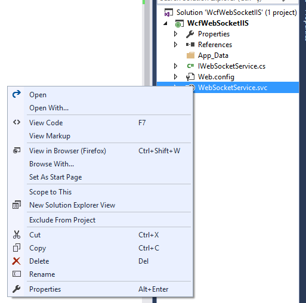
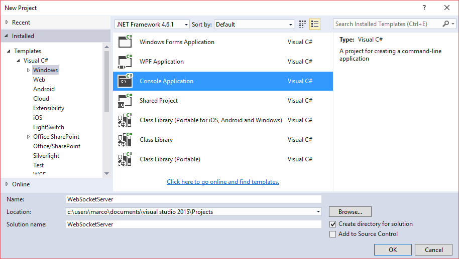
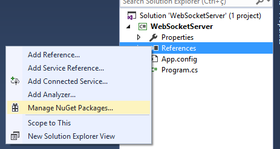
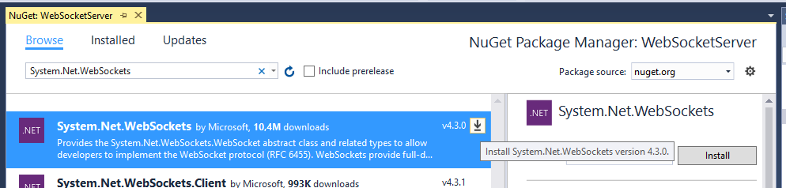

Se você chegou neste artigo após passar por incontáveis páginas desatualizadas, você deu sorte! Vou mostrar para vocês como programar um servidor e um cliente que utilizam o protocolo web socket para comunicação em tempo real. A menos que o cliente esteja vendo aquele vídeo pesadão que come toda a banda enquanto usa sua aplicação, aí vai rolar aquele lag e a comunicação não vai ser em tempo tão real assim 😉
É possível programar um host de diversas maneiras, tipo preparar Neston® (não fui pago pela propaganda gratuita 😢).
HttpListener auto-hospedado (requer usuário administrador)HttpContext.AccepWebSocketRequest.TcpListenerProcurando pela internet você pode se deparar com APIs mais antigas de fazer isso que são mais suportadas ou recomendadas. Listo aqui caso você tropece em alguma delas, mas não utilize.
Microsoft.WebSockets - WebSocketHandler. Descontinuado. Surgiu em 2011 e foi atualizado pela última vez em 2015.System.Net.WebSockets. Alguns métodos foram removidos desta classe. Utilize apenas a mais atual que no momento em que estou escrevendo isso é a versão 4.3.0.Vamos ver as primeiras duas alternatvas, que são menos documentadas e a parte do cliente. Usei o Visual Studio 2015.
WCF é mais utilizado para trocar mensagens SOAP, mas pode ser configurado para suportar comunicação via WebSockets também. No visual studio, crie um novo projeto através do menu File, New, Project... e selecione o tipo WCF Service Application.

O projeto cria os seguintes arquivos:

Vamos renomear os serviços IService1.cs e Service1.svc para IWebSocketService.cs e WebSocketService.svc.

Depois adicione no projeto a referência para System.ServiceModel.Channels.


Agora substitua o conteúdo do arquivo IWebSocketService.cs pelo abaixo:
IWebSocketService.cs
using System;
using System.Collections.Generic;
using System.Linq;
using System.Runtime.Serialization;
using System.ServiceModel;
using System.ServiceModel.Channels;
using System.Text;
namespace WcfWebSocketIIS {
/// <summary>
/// Interface do "cliente".
/// Irá enviar qualquer tipo de de dado para o cliente (callback do serviço)
/// através do único método Send
/// </summary>
[ServiceContract]
public interface IWebSocketServiceCallback {
[OperationContract(IsOneWay = true, Action = "*")]
void Send(Message message);
}
/// <summary>
/// Interface do serviço.
/// Irá receber qualquer tipo de de dado através do único método Receive
/// </summary>
[ServiceContract(CallbackContract = typeof(IWebSocketServiceCallback))]
public interface IWebSocketService {
[OperationContract(IsOneWay = true, Action = "*")]
void Receive(Message message);
}
}
Action="*" basicamente indica que a operação marcada por este atributo receberá todo e qualquer dado ou mensagem enviado para o serviço.
Por esse motivo, uma interface que define um ServiceContract pode ter apenas um OperationContract marcado com Action="*".
Esta é um das modificações necessárias para o serviço se comunicar usando WebSockets ao invés de SOAP, já que o cliente WebSocket não chama nenhuma operação específica.
Se desejar, veja a explicação mais detalhada de Action="*".
Já o arquivo WebSocketService.svc.cs deve ter o seguinte conteúdo:
WebSocketService.svc.cs
using System;
using System.Collections.Generic;
using System.Linq;
using System.Net.WebSockets;
using System.Runtime.Serialization;
using System.ServiceModel;
using System.ServiceModel.Channels;
using System.Text;
using System.Web;
namespace WcfWebSocketIIS {
sealed public class WebSocketService : IWebSocketService {
public WebSocketService() {
// Creates a standard duplex service
// The service uses the default instancing mode which is PerSession
// so a new instance will be created for each client
// and the local variable will point to a different callback channel in each service instance
this.callback = OperationContext.Current.GetCallbackChannel<IWebSocketServiceCallback>();
}
public void Receive(Message message) {
if (message == null) {
throw new ArgumentNullException("message");
}
var property = (WebSocketMessageProperty)message.Properties["WebSocketMessageProperty"];
WebSocketContext context = property.WebSocketContext;
var queryParameters = HttpUtility.ParseQueryString(context.RequestUri.Query);
string content = string.Empty;
// if request was made using GET
if (!message.IsEmpty) {
byte[] body = message.GetBody<byte[]>();
content = Encoding.UTF8.GetString(body);
}
// TODO Do something with the content/queryParams
string str = null;
if (string.IsNullOrEmpty(content)) { // Connection open message
str = "Opening connection from user";
if (!string.IsNullOrEmpty(queryParameters["Name"])) {
str += queryParameters["Name"].ToString();
}
} else { // Message received from client
str = "Received message: " + content;
}
this.callback.Send(CreateMessage(str));
}
private Message CreateMessage(string content) {
// se o visual studio não encontrou a classe ByteStreamMessage
// é porque você pulou um passo lá em cima onde adicionamos
// a referência para System.ServiceModel.Channels ;)
Message message = ByteStreamMessage.CreateMessage(
new ArraySegment<byte>(
Encoding.UTF8.GetBytes(content)
)
);
message.Properties["WebSocketMessageProperty"] = new WebSocketMessageProperty { MessageType = WebSocketMessageType.Text };
return message;
}
private IWebSocketServiceCallback callback = null;
}
}
Edite também o arquivo WebSocketService.svc clicando sobre ele com o botão esquerdo (ou direito se você for destro 😋), e selecionando a opção de menu View Markup
.

Para sua conveniência, o Visual Studio 2015 alterou o nome da referência do serviço automaticamente, só que não. Vamos lá alterar na mão.
Mude o nome do serviço dentro deste arquivo para o valor WcfWebSocketIIS.WebSocketService, como no exemplo abaixo:
WebSocketService.svc
<%@ ServiceHost Language="C#" Debug="true" Service="WcfWebSocketIIS.WebSocketService" CodeBehind="WebSocketService.svc.cs" %>
E já que mexemos em quase todos os arquivos deste projeto, porque não alterar também o Web.config?
Nele vamos realizar mais uma modificação para trocar o SOAP por WebSockets.
Dizemos que o endpoint vai trafegar bytes ao invés de xml de acordo com a estrutura abaixo:
Web.config
<?xml version="1.0"?>
<configuration>
<appSettings>
<add key="aspnet:UseTaskFriendlySynchronizationContext" value="true" />
</appSettings>
<system.web>
<compilation debug="true" targetFramework="4.6.1" />
<httpRuntime targetFramework="4.6.1"/>
</system.web>
<system.serviceModel>
<services>
<service name="WcfWebSockets.WebSocketService">
<endpoint
address=""
binding="customBinding"
bindingConfiguration="webSocket"
contract="WcfWebSockets.IWebSocketService"
></endpoint>
</service>
</services>
<bindings>
<customBinding>
<binding name="webSocket">
<!--
We use the byteStreamMessageEncoding which allows the service to receive simple byte
streams as input instead of complex SOAP structures.
-->
<byteStreamMessageEncoding/>
<!--
We set the transportUsage to Always to force the usage of WebSocket rather than HTTP.
We set the createNotificationOnConnection to true to allow our Receive method
to be invoked for the connection request message (the first GET request which is sent
to the service).
-->
<httpTransport>
<webSocketSettings transportUsage="Always" createNotificationOnConnection="true"/>
</httpTransport>
</binding>
</customBinding>
</bindings>
<serviceHostingEnvironment aspNetCompatibilityEnabled="true" multipleSiteBindingsEnabled="true" />
</system.serviceModel>
<system.webServer>
<modules runAllManagedModulesForAllRequests="true"/>
<directoryBrowse enabled="false"/>
</system.webServer>
</configuration>
E já que não tem mais nenhum arquivo para modificar, aperta o play e pronto.
Como vamos escrever um programa que fica escutando uma determinada porta, ele precisa ser executado por um usuário administrador. Afinal de contas, ninguém gosta que um qualquer fique escutando através da porta... 😒 Começamos criando um programa de linha de comando básico.

E adicione a referência System.Net.WebSockets pelo Nuget.


TODO verificar se é preciso adicionar a referência para System.Net
Crie uma classe que será nosso servidor.
WebSocketServer.cs
using System;
using System.Collections.Generic;
using System.Linq;
using System.Text;
using System.Net;
using System.Threading;
using System.Threading.Tasks;
using System.Net.WebSockets;
namespace WebSocketServer {
// This console application uses `HttpListener` to receive WebSocket connections.
// It expects to receive binary data and it streams back the data as it receives it.
// The [source](https://github.com/paulbatum/WebSocket-Samples) for this sample
// is on GitHub.
sealed class WebSocketServer {
public async void Start(string listenerPrefix) {
HttpListener listener = new HttpListener();
listener.Prefixes.Add(listenerPrefix);
listener.Start();
Console.WriteLine("Listening...");
// loop de novas conexões
while (true) {
HttpListenerContext listenerContext = await listener.GetContextAsync();
if (listenerContext.Request.IsWebSocketRequest) {
ProcessRequest(listenerContext);
} else {
listenerContext.Response.StatusCode = 400;
listenerContext.Response.Close();
}
}
}
private async void ProcessRequest(HttpListenerContext listenerContext) {
WebSocketContext webSocketContext = null;
try {
// When calling `AcceptWebSocketAsync` the subprotocol must be specified.
// This sample assumes that no subprotocol was requested.
webSocketContext = await listenerContext.AcceptWebSocketAsync(subProtocol: null);
Interlocked.Increment(ref count);
Console.WriteLine("Processed: {0}", count);
} catch (Exception e) {
// The upgrade process failed somehow.
// For simplicity lets assume it was a failure on
// the part of the server and indicate this using 500.
listenerContext.Response.StatusCode = 500;
listenerContext.Response.Close();
Console.WriteLine("Exception: {0}", e);
return;
}
WebSocket webSocket = webSocketContext.WebSocket;
try {
// The buffer will be reused as we only need to hold on to the data
// long enough to send it back to the sender (this is an echo server).
byte[] receiveBuffer = new byte[1024];
// loop de novos dados
while (webSocket.State == WebSocketState.Open) {
WebSocketReceiveResult receiveResult = await webSocket.ReceiveAsync(
new ArraySegment<byte>(receiveBuffer),
CancellationToken.None // We are not using timeouts
);
// client requested the connection to close
if (receiveResult.MessageType == WebSocketMessageType.Close) {
await webSocket.CloseAsync(
WebSocketCloseStatus.NormalClosure, // omits close message
"",
CancellationToken.None
);
// client sent text
} else if (receiveResult.MessageType == WebSocketMessageType.Text) {
// we are not handling text in this example so we close the connection
await webSocket.CloseAsync(
WebSocketCloseStatus.InvalidMessageType,
"Cannot accept text frame",
CancellationToken.None
);
// client sent binary data
} else {
// Note the use of the `EndOfMessage` flag on the receive result.
// This means that if this echo server is sent one continuous stream
// of binary data (with EndOfMessage always false) it will just stream
// back the same thing.
await webSocket.SendAsync(
new ArraySegment<byte>(receiveBuffer, 0, receiveResult.Count),
WebSocketMessageType.Binary,
receiveResult.EndOfMessage,
CancellationToken.None
);
}
}
} catch (Exception e) {
// Pretty much any exception that occurs when calling `SendAsync`,
// `ReceiveAsync` or `CloseAsync` is unrecoverable in that it will abort
// the connection and leave the `WebSocket` instance in an unusable state.
Console.WriteLine("Exception: {0}", e);
} finally {
// Clean up by disposing the WebSocket once it is closed/aborted.
if (webSocket != null) {
webSocket.Dispose();
}
}
}
/// <summary>
/// Number of opened connections
/// </summary>
private int count = 0;
}
// This extension method wraps the BeginGetContext
// and EndGetContext methods on HttpListener as a Task
public static class HelperExtensions {
public static Task GetContextAsync(this HttpListener listener) {
return Task.Factory.FromAsync<HttpListenerContext>(
listener.BeginGetContext,
listener.EndGetContext,
TaskCreationOptions.None
);
}
}
}
E modifique o conteúdo de Program.cs pra iniciar nossa classe recém criada.
Program.cs
using System;
using System.Collections.Generic;
using System.Linq;
using System.Text;
using System.Threading.Tasks;
namespace WebSocketServer {
sealed class Program {
static void Main(string[] args) {
var server = new WebSocketServer();
server.Start("http://+:80/wsDemo/");
Console.WriteLine("Press any key to exit...");
Console.ReadKey();
}
}
}
Aperte play.
A parte do front-end é bem resumida, pois o navegador faz a maior parte para nós.
É tão simples como criar um objeto WebSocket, registrar seus eventos e chamar o método send.
websocketclient.html
<!DOCTYPE html>
<html lang="pt-br">
<head>
<meta charset="UTF-8">
<meta name="viewport" content="width=device-width, initial-scale=1.0">
<title>Wcf Web Socket Client</title>
</head>
<body>
<script src='websocketclient.js'></script>
</body>
</html>
websocketclient.js
'use strict';
// note que o protocolo é ws:// ou wss:// mesmo que o host
// esteja escutando via http:// ou https:// respectivamente
// isso porque o protocolo consiste numa conexão inicial http
// que é picada por uma aranha, ganha super poderes e vira
// uma conexão web🕸 socket
const webSocketClient = new WebSocket("ws://troquepeloseuhost/WebSocketService.svc");
webSocketClient.addEventListener('open', (evento) => {
console.log('open');
console.log(evento);
});
webSocketClient.addEventListener('close', (evento) => {
console.log('close');
console.log(evento);
});
webSocketClient.addEventListener('error', (evento) => {
console.log('error');
console.log(evento);
});
webSocketClient.addEventListener('message', (evento) => {
console.log(evento.data);
exempleSocket.send('alguma coisa');
});
Provavelmente você irá trafegar dados que obedecem algum tipo de formato, e é para isso que o subprotocolo do websockets serve.
TODO